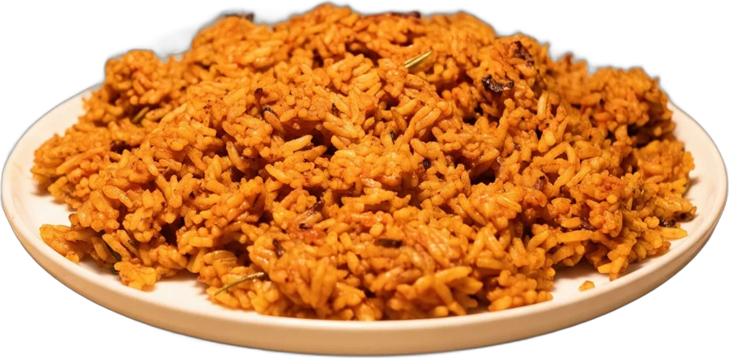
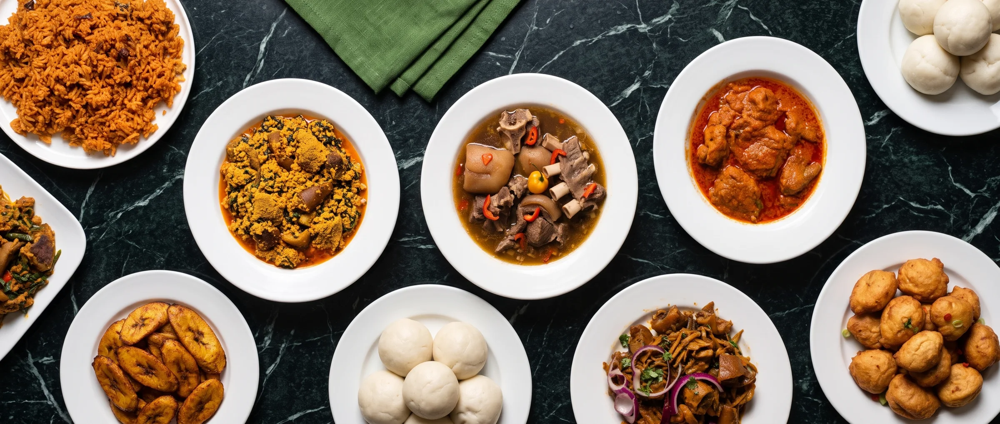
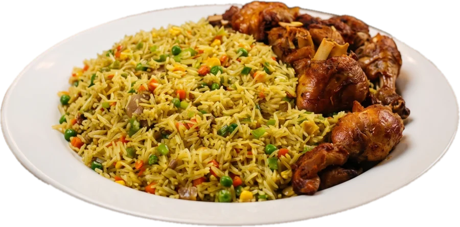
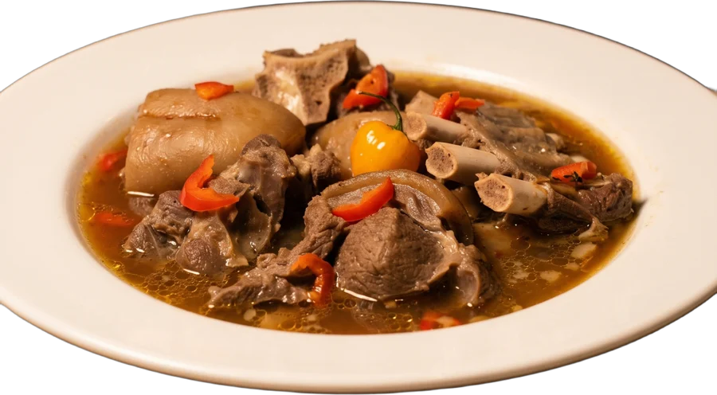
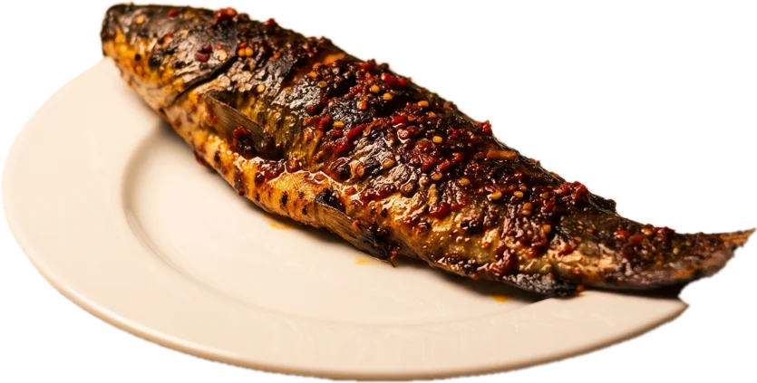
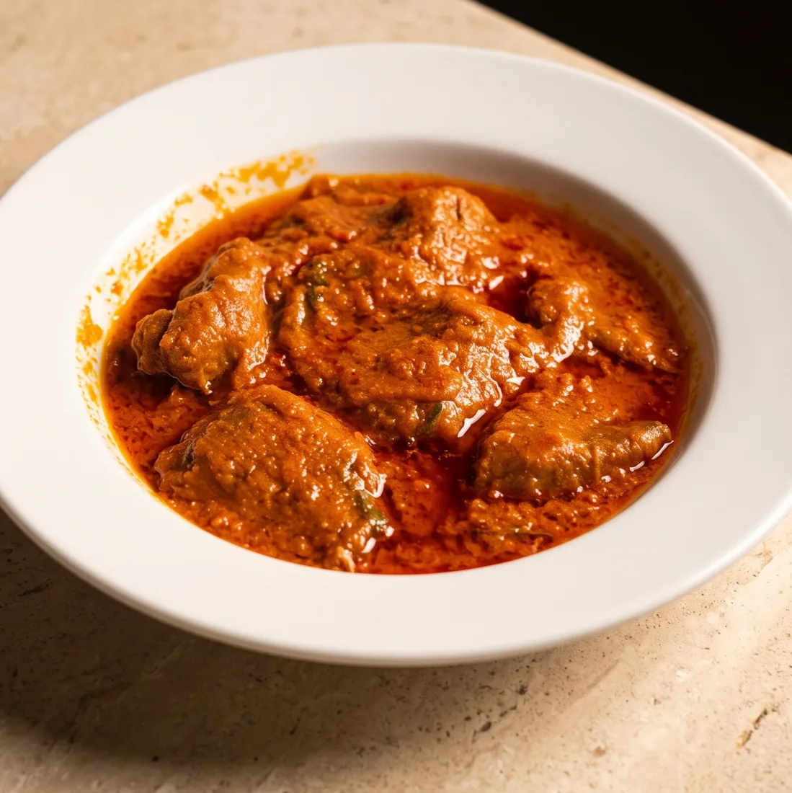

Der Namensgeber
Jollof Rice
Westafrikas berühmtester Reis: in Tomaten-Paprika-Soße gegart, rauchig, mit knusprigen Stellen vom Topfboden.
9,90€

Rauchiger Jollof Rice, Egusi mit Pounded Yam, scharfe Pepper Soup – frisch gekocht, so wie zu Hause in Nigeria. Komm vorbei, bei uns bist du willkommen.

Westafrikas berühmtester Reis: in Tomaten-Paprika-Soße gegart, rauchig, mit knusprigen Stellen vom Topfboden.

Gebratener Reis mit Erbsen, Karotten und Gemüse, dazu Hähnchen.

Klare, scharfe Brühe mit Ziegenfleisch am Knochen.

Ganzer gegrillter Wels mit würziger Kruste.
Knusprig frittiertes Hähnchen.
Frittierte Bohnen-Bällchen.
Dein Teller. Deine Kombi.

JOLLOF ist das Restaurant der Familie Adamu – vielen in Graz vom Fußball bekannt. Für den Vater war immer klar: Irgendwann eröffnet er sein eigenes Restaurant.
Sein Ziel: afrikanische Küche nach Österreich bringen. Einen Ort schaffen, an dem sich jeder wie zu Hause fühlt – egal, ob du mit Jollof Rice aufgewachsen bist oder ihn heute zum ersten Mal probierst.
Mehr über uns →Dann freuen wir uns riesig über ein paar Worte auf Google. So finden auch andere zu uns – dauert nur 30 Sekunden.
Wir haben jeden Tag für dich geöffnet – komm einfach vorbei.
Schönaugasse 11, 8010 Graz
0664 782 42 30
| Montag | 11:00–24:00 |
| Dienstag | 11:00–24:00 |
| Mittwoch | 11:00–24:00 |
| Donnerstag | 11:00–24:00 |
| Freitag | 11:00–24:00 |
| Samstag | 11:00–24:00 |
| Sonntag | 11:00–24:00 |